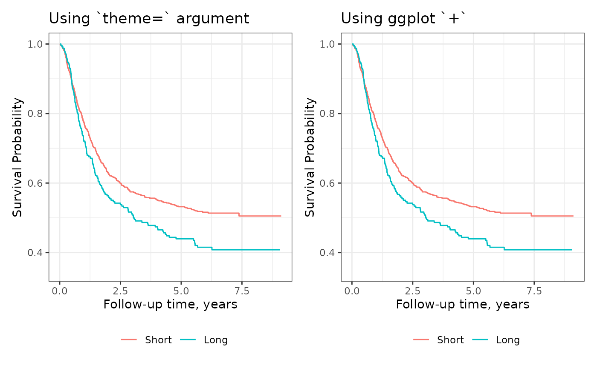
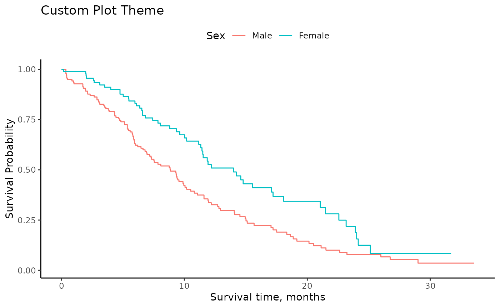
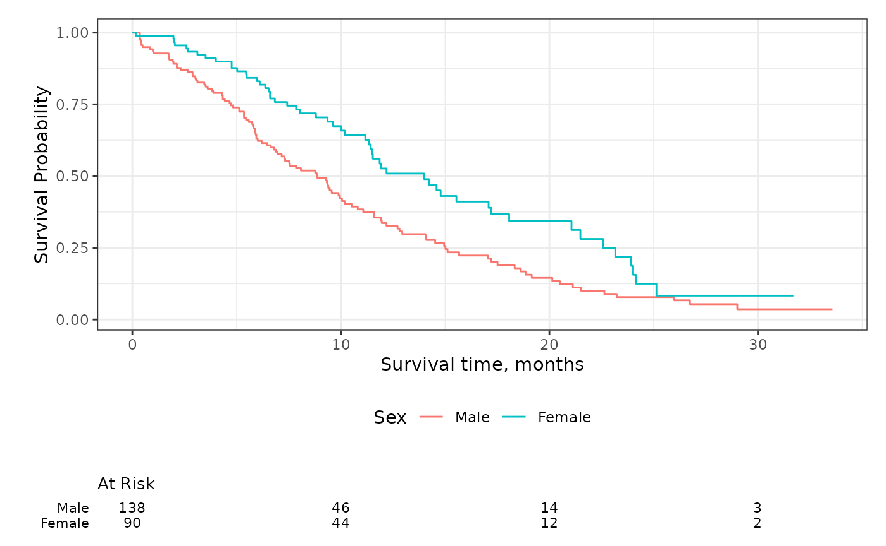
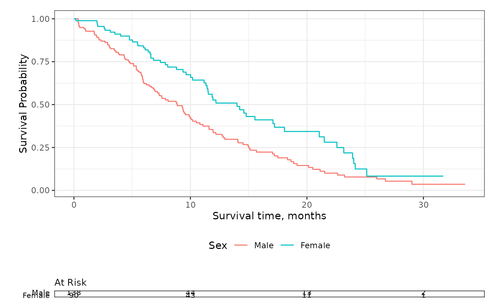
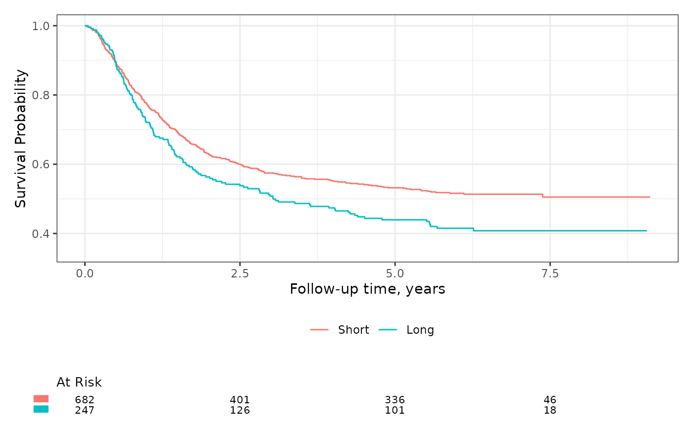

Plot Themes
Both ggsurvfit() and ggcuminc() use theme_ggsurvfit_default() as the default ggplot2 theme, which is similar to ggplot2::theme_bw(). While this theme provides beautiful figures, you may want to modify it.
You’ll can use the ggsurvfit(theme=) argument to change the default theme. You can pass any ggplot2 theme to this argument, or simply add a theme using typical ggplot2 syntax.
library(ggsurvfit)
library(ggplot2)
library(patchwork)
km_estimate_sex <- survfit2(Surv(time, status) ~ sex, data = df_lung)
gg_theme_default1 <-
km_estimate_sex %>%
ggsurvfit(theme = theme_ggsurvfit_default()) +
labs(title = "Using `theme=` argument")
gg_theme_default2 <-
km_estimate_sex %>%
ggsurvfit(theme = NULL) +
theme_ggsurvfit_default() +
labs(title = "Using ggplot `+`")
gg_theme_default1 + gg_theme_default2
As you can see, either method of passing the theme results in an identical figure. You can easily apply any user-created theme or any theme that exported with the ggplot2 package. To construct a custom theme, include ggplot2 calls in a list as in the example below.
km_estimate_sex %>%
ggsurvfit(theme = list(theme_classic(), theme(legend.position = "top"))) +
labs(title = "Custom Plot Theme")
Risk Table Themes
Similar to the plots above, the risk tables also come with a default theme. To understand how to use risk table themes, one must first understand what a risk table is. Each risk table that is placed below a plot is itself a ggplot created with ggplot2::geom_text().
Unlike the plot themes, the risk table themes can only be passed via add_risktable(theme=).
km_estimate_sex %>%
ggsurvfit() +
add_risktable(
risktable_stats = "n.risk",
theme = theme_risktable_default()
)
A typical theme appropriate for a risk table plot will remove grid lines and provide a clean area to display the numbers at risk. In the risk table above, the strata levels are y-axis labels, and “At Risk” is the plot title.
Another risk table theme adds a box around the statistics presented.
km_estimate_sex %>%
ggsurvfit() +
add_risktable(
risktable_stats = "n.risk",
theme = theme_risktable_boxed()
)
It’s possible to replace the stratum levels with a symbol, which is particularly helpful when you have long group labels.
km_estimate_sex %>%
ggsurvfit() +
add_risktable(risktable_stats = "n.risk") +
add_risktable_strata_symbol()
When customizing the risk table themes and using add_risktable_strata_symbol(), note that the symbol is added with ggplot2::scale_y_discrete(); including a theme that uses the discrete y scale could cause a conflict.
If you need a risk table theme that is not currently available in ggsurvfit, community-based themes are welcome! Consider adding your theme to the package.